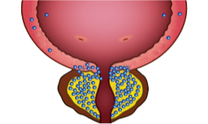

Силодозин (действующее вещество препарата Урорек), высокоселективный конкурентный антагонист альфа1А-адренорецепторов, которые в основном расположены в предстательной железе, в тканях дна и шейки мочевого пузыря, капсуле предстательной железы и простатической части мочеиспускательного канала.
Блокада альфа1А-адренорецепторов снижает тонус гладкой мускулатуры в этих тканях, что ведет к улучшению оттока мочи из мочевого пузыря. Одновременно уменьшаются симптомы обструкции и раздражения, связанные с доброкачественной гиперплазией предстательной железы.6
альфа 1A адренорепторы

- Простата
- Уретра
- Мочевой пузырь
- Семенные пузырьки
альфа 1B адренорепторы

- Кровеносные сосуды
альфа 1D адренорепторы

- Мочевой пузырь
- Спинной мозг
- Носовые пазухи
При ДГПЖ количество альфа1А-адренорецепторов в простате увеличивается18,19,20
| альфа1-адренорепторы | Нормальная ткань простаты | ДГПЖ |
|---|---|---|
| α1A | 63% | 85% |
Количество альфа1B-адренорецепторов в сосудистом русле тоже увеличивается с возрастом*21,22,23
| Возраст | <55 лет | ≥65 лет |
|---|---|---|
| Экспрессия α1B адренорецепторов в сосудистом русле | α1A > α1B | α1B > α1A |
*Изменения соотношения подтипов адренорецепторов являются причиной склонности пожилых пациентов к нестабильности АД во время лечения альфа-адреноблокаторами24
Максимальная уроселективность силодозина в классе альфа-адреноблокаторов обуславливает его уродинамическую эффективность и высокий профиль безопасности4
Профиль связывания антагонистов α1-адренорецепторов с подтипами рекомбинантных альфа1-адренорецепторов человека25
| Альфа-адреноблокатор | Селективность к альфа1-адренорепторам | |
|---|---|---|
| α1A:α1B | α1A:α1D | |
| Алфузозин | 0.309:1 | 0.617:1 |
| Нафтопидил | 0.372:1 | 0.209:1 |
| Тамсулозин | 9.55:1 | 2.51:1 |
| Силодозин | 162:1 | 55:1 |
В исследованиях in vitro было показано, что сродство силодозина к альфа1A-адренорецепторам в 162 раза превосходит его способность взаимодействовать с альфа1B-адренорецепторами, которые расположены в гладких мышцах сосудов. Благодаря высокой селективности силодозин не вызывает клинически значимого снижения артериального давления (АД)6
Максимальная уроселективность обеспечивает:25,26
- Быстрое начало действия
- Эффективное снятие СНМП
- Минимум побочных эффектов со стороны сердечно-сосудистой системы